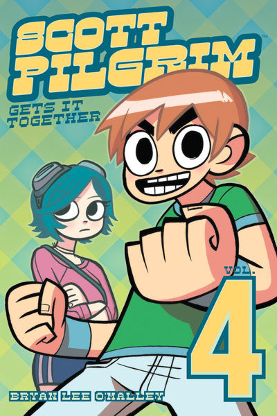

The novel features a colored introduction before the volume actually begins. It takes place during summer 2005, two months after Scott defeated Todd Ingram, as the characters have a get-together on the beach for Julie Powers' birthday. Ramona tells Scott that he is the nicest boy she's ever dated. Later, at Julie's aunt's house, Scott accidentally walks in on Kim Pine and Knives Chau, who are drunk and making out. (let us never speak of this again)
Later that August, Kim moves into an apartment with Hollie and Joseph. Stephen Stills, who is volunteering to help, sees that Joseph has a home recording studio, and asks him to help Sex Bob-omb record an album. Joseph agrees to it, but only out of attraction to Stephen.
A heat wave hits Toronto, and to escape it, Scott goes to the Dufferin Mall, where his old high school friend Lisa spots him. They proceed to catch up. Later, at Knives' house, Knives and her friend Tamara notice that the picture of Scott on Knives' shrine is slashed.
Scott takes Lisa to Sneaky Dee's, a tex-mex bar, to re-acquaint her with Kim and introduce her to the rest of his friends, including Ramona. That night, Scott has a dream that he is wandering in a forest with an elf. Ramona shows up and starts to nag him, which prompts him to wake up and try to find a job.
Scott first tries his luck at Second Cup, but is stymied when Stacey asks him if he really wants to work there. His attempts to get a job at No Account Video quickly fail after Kim points out that he doesn't have a resume, is not prepared for an interview, and owes the video store money in late fees. Kim brings Scott to The Happy Avocado, the vegetarian restaurant where Stephen Stills works. Scott is hired and vows to be the best dishwasher ever, for which he gains 500 experience points. Afterward, Kim realizes that a man with a samurai sword has been following Scott. The man slices a streetcar in half and chases Scott, but Scott and Kim escape through a door that leads to a subspace portal.
Later that day, Scott goes with Ramona to Stephen Stills and Young Neil's place for band practice, however, upon arrival, Stephen notes that they can't practice as Kim's drumset is at Hollies' due to them currently recording their album. Later, after a recording session, the members of Sex Bob-Omb, along with Kim's housemates and Julie, go to Sneaky Dee's. When Knives shows up and sits next to Stephen, Julie freaks out and Scott quickly decides he wants to leave.
The next day, Scott and Wallace venture to the financial district to meet with their landlord, Peter. Peter tells them that they must re-sign the lease or leave by August 27. Scott then goes for his first day of work at the Happy Avocado. Afterwards, Scott is attacked by a ninja. When he counter-attacks, he discovers that the ninja is a girl (he punched her in the boob). Too winded to make a proper introduction, she tells Scott that they will meet again and disappears.
Confused, Scott travels back to his apartment and calls Ramona to ask her about the recent encounter, and leaves her a message as she is out. The band continues to record their album and once again go to Sneaky Dee's and Lisa pulls Scott out to the street, where she drunkenly makes a pass at him. That night, Scott and Wallace lie in bed awake (the first time seen in the series), and Wallace tells Scott that they must decide whether or not to move out.
The following afternoon, Scott is working at the Happy Avacado with Stephen Stills when he suddenly spots the girl who attacked him, ducking down in terror, he asks Stephen Stills to see who she's with, and Stephen Stills nonchalantly replies that she's with his girlfriend, Ramona. He then confronts the two, and eventually Scott realizes that the ninja is in fact one of Ramona's exes and a member of the League of Ramona's Evil Exes. Roxie then prepares to fight Scott, but Scott cowers behind Ramona, not wanting to fight Roxie using the excuse that she's got a sword. Ramona then allows Scott to hide in her Subspace Suitcase and asks him to pass her a weapon as she prepares to fight Roxie herself.
Ramona and Scott then travel to through a nearby Subspace door and Ramona prepares to battle Roxie. Ramona appears to have the upper hand during the battle, but she is eventually out maneuvered by Roxie's superior speed and is knocked back into submission. Roxie then leaves the Subspace, leaving Scott confused and Ramona downtrodden.
Afterward, Ramona tells Scott about Roxie and how she's become an accomplished artist, Scott then subtly asks if he can move in with Ramona and she reluctantly agrees. They then go with the rest of the group once again to Sneaky Dee's, but Ramona becomes suspicious of the relationship between Scott and Lisa. On the way back from Sneaky Dee's, Ramona confronts Scott and after a heated argument, leaves him for the evening. Scott stumbles upon Wallace in bed with his (unseen) boyfriend Mobile. Wallace then notifies that Scott has been fired from his job at the Happy Avocado due to the commotion earlier that day. With no-where to go and unwilling to face Ramona, Scott resorts to calling Lisa and asking to stay the night with her at her sister's.
While there, he and Lisa question why they never got together. Scott admits to having a fight with Ramona, and Lisa suggests that they hook up.
The chapter cuts to Scott having another dream in the woods, where he encounters a half-angelic/half-demonic Ramona who asks him if he really wants her, since he can't seem to remember the password. Roxie Richter appears and tells Scott his dreams suck, and starts to chase him, slicing off one of his arms with her katana. He wakes up on Lisa's sister's, Lisa then reveals to him that nothing happened between then and that Scott confessed his love for Ramona to Lisa. Relieved, Scott quickly leaves and goes back to the Happy Avocado to get his job back, Scott succeeds, primarily due to the fact that they had no-one to replace him yet.
After working his shift, Scott heads to Second Cup to get a free iced latte from Stacey. Upon entering, he realizes that he is in a different Second Cup, and finds Knives working at the counter. He turns to leave, but spots the man who first attacked him. Knives exclaims that it's her dad and realizes that because she was dating a white boy his brain broke in half, only to "be replaced by a purely mechanical engine of revenge." Knives' dad then spots Scott and gives chase. Scott escapes into Subspace, where he finds Ramona, dressed scandalously and sitting at the foot of a shadowy figure. Enraged, Ramona chases him out of subspace, and they end up on her front lawn. After he hurriedly explains that he was only fleeing another attempt on his life, she calms down and tells him to forget what he saw. He tells her that he spent the night at Lisa's because he couldn't go home and didn't dare call her. Before she can react, Roxie appears and complains that she's trying to sleep. Thinking that Ramona may have cheated on him, Scott's head begins to glow. Too deflated to explain the situation, Ramona tells Scott to "walk it off", and he stumbles off.
After collapsing in the middle of a busy road he becomes aware of a person standing over him. On looking up we see that the person is a doppelganger of Scott but with a sinister sneer on his face. Scott recognizes the double and is spurred by the sight of him. He charges through the double, disapperating it.
On arriving at Ramona's house he is confronted by Mr. Chau, who followed him through subspace and is now chasing her. Scott lures Mr. Chau into Ramona's home and Roxie, believing that Mr. Chau is an agent of Gideon sent to do her job for her, charges him with her katana, and, as the momentum sends her and Mr. Chau over the edge of the second-floor balcony, all while Roxie taunts Scott for being too scared to fight her. When Ramona comments that Roxie has a point, Scott finally gets up the nerve to tell Ramona that he loves her and gains 9,999 experience points. As a result, he levels up and gains the Power Of Love, a sword which he uses to slice Roxie in half. Defeated Roxie taunts Scott about the upcoming exes, her body then explodes into bunnies, birdies, and piglets. Scott then realizes that he still has to deal with Mr. Chau. Scott assures him that he hardly even touched his daughter and always respected her; apparently satisfied, the old man bows and disappears.
Scott then kisses Ramona and declares that he loves her, and Ramona tells him she loves him too. They decided to move in together. Meanwhile, Mr. Chau tells Knives in Chinese that he thinks Scott is a decent man and that perhaps dating a white boy isn't such a bad idea. Knives, however, has no idea what he is saying since she doesn't understand Chinese.
Later, at a Korean restaurant, all of the remaining loose ends are tied up. Scott learns that Wallace has decided to move in with his boyfriend, while Lisa announces that she's finally gotten her papers to move to the US.